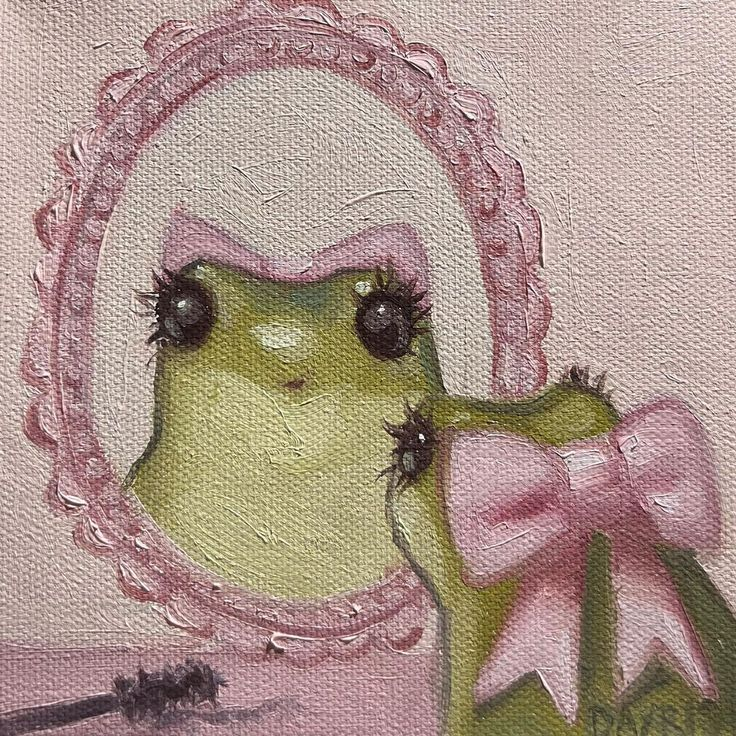
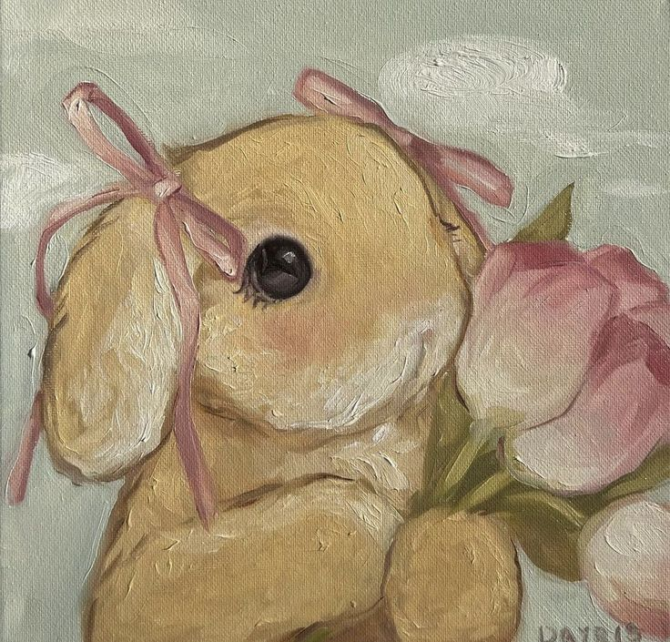

 A frog is any member of a diverse and largely carnivorous group of short-bodied, tailless amphibians composing the order Anura[1] (ἀνούρα, literally without tail in Ancient Greek). The oldest fossil "proto-frog" Triadobatrachus is known from the Early Triassic of Madagascar, but molecular clock dating suggests their split from other amphibians may extend further back to the Permian, 265 million years ago. Frogs are widely distributed, ranging from the tropics to subarctic regions, but the greatest concentration of species diversity is in tropical rainforest. Frogs account for around 88% of extant amphibian species. They are also one of the five most diverse vertebrate orders. Warty frog species tend to be called toads, but the distinction between frogs and toads is informal, not from taxonomy or evolutionary history.
Rabbits, also known as bunnies or bunny rabbits, are small mammals in the family Leporidae (which also includes the hares), which is in the order Lagomorpha (which also includes the pikas). Oryctolagus cuniculus is the European rabbit, including its descendants, the world's 305 breeds[1] of domestic rabbit. Sylvilagus includes 13 wild rabbit species, among them the seven types of cottontail. The European rabbit, which has been introduced on every continent except Antarctica, is familiar throughout the world as a wild prey animal, a domesticated form of livestock and a pet. With its widespread effect on ecologies and cultures, in many areas of the world, the rabbit is a part of daily life – as food, clothing, a companion, and a source of artistic inspiration.